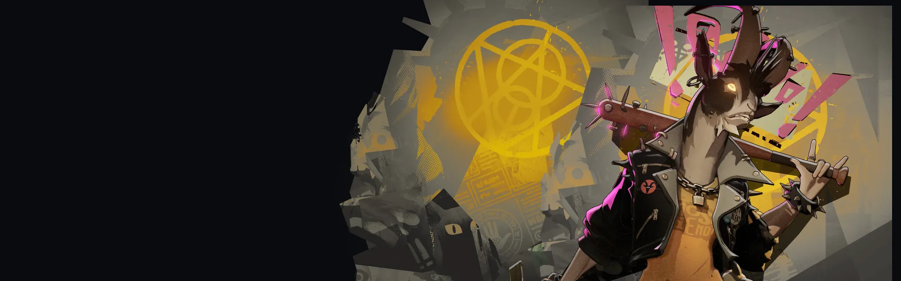
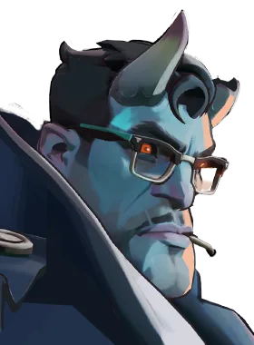

Lutador de corpo a corpo que gosta de avançar e trocar golpes.
História
Billy é uma bola quente de raiva, furioso com a própria noção de... alguma coisa. Talvez sejam os policiais. Talvez sejam regulamentos mágicos. Talvez seja o serviço do giroscópio no centro da cidade. (Não o bom. O outro.)
Não pergunte a ele como ele conseguiu a cabeça de bode.
História oficial do jogo, traduzida automaticamente para o português.
Números reais
Habilidades
Bate o taco no chão, puxando inimigos para baixo com dano corpo a corpo e uma onda espiritual que os joga para cima.
Investe de cabeça num inimigo, lançando-o ao ar junto com ele; o tempo de recarga cai pela metade no impacto.
Golpes corpo a corpo restauram munição e deixam a vítima Arrebentada; com a habilidade ativa, seus tiros causam mais dano a ela.
Acorrenta inimigos próximos, retarda quem puxa a corrente e depois os puxa até Billy, causando dano espiritual.
Builds mais usadas
31.387 partidas registradas com esta build.
Regeneração Extra (800) · Rodadas Monstruosas (800) · Roubo de vida corpo a corpo (800) · Perto (800) · Grão (800) · Perseguidor (1.600) · Sacrifício de Cultista (3.200) · Golpe de vida (3.200) · Golpe Espiritual (800) · Triturador resistente a balas (1.600)
20.570 partidas registradas com esta build.
Perto (800) · Roubo de vida corpo a corpo (800) · Grão (800) · Rodadas Monstruosas (800) · Perseguidor (1.600) · Sacrifício de Cultista (3.200) · Enfraquecimento do tiro na cabeça (1.600) · À queima-roupa (3.200) · Carga Corpo a Corpo (1.600) · Blindagem Espiritual (1.600)
20.507 partidas registradas com esta build.
Rodadas Monstruosas (800) · Roubo de vida corpo a corpo (800) · Perseguidor (1.600) · Perto (800) · Sacrifício de Cultista (3.200) · Golpe de vida (3.200) · Blindagem Espiritual (1.600) · Triturador resistente a balas (1.600) · Arrebatamento de Espírito (3.200) · Recarga rápida (3.200)
Confrontos reais
 Sinclair — 53.3% de vitória
Sinclair — 53.3% de vitória Shiv — 52.9% de vitória
Shiv — 52.9% de vitória Mirage — 52.9% de vitória
Mirage — 52.9% de vitória Paradox — 52.0% de vitória
Paradox — 52.0% de vitória Rem — 51.9% de vitória
Rem — 51.9% de vitória Pocket — 51.9% de vitória
Pocket — 51.9% de vitória
 Graves — 40.0% de vitória
Graves — 40.0% de vitória Paige — 41.2% de vitória
Paige — 41.2% de vitória Rat King — 41.8% de vitória
Rat King — 41.8% de vitória Seven — 42.2% de vitória
Seven — 42.2% de vitória Victor — 43.8% de vitória
Victor — 43.8% de vitória Haze — 44.1% de vitória
Haze — 44.1% de vitória
Ver a página de counters do Billy
O que upar primeiro
Nível por nível, na ordem que os jogadores mais usam em partidas de verdade. A porcentagem mostra quantos escolheram aquela habilidade naquele nível.
Melhores duplas
Heróis que mais ganham jogando junto com ele, em partidas reais (pelo menos 1.500 partidas juntos).
- Rat King56,7%
- Paige55,3%
- Graves54,4%
- Seven53,6%
- Haze52,3%
 Silver41,3%
Silver41,3% Viscous41,9%
Viscous41,9%- Mirage42,6%
Rota (lane)
Na rota, cada lado joga em dupla. Estes números são de confrontos reais: a diferença de almas é medida com o jogo já começado, então almas no verde significa que ele costuma estar na frente.
 Ivy — 36,8% de vitória +318 almas (380 partidas)
Ivy — 36,8% de vitória +318 almas (380 partidas)- Graves — 38,4% de vitória −240 almas (4.090 partidas)
- Seven — 39,9% de vitória −201 almas (4.769 partidas)
- Paige — 40,4% de vitória −238 almas (7.507 partidas)
- Haze — 40,9% de vitória −543 almas (8.418 partidas)
- Rat King — 41,4% de vitória −482 almas (22.417 partidas)
 Violet — 42,1% de vitória +154 almas (240 partidas)
Violet — 42,1% de vitória +154 almas (240 partidas)
Abrams — 42,2% de vitória −370 almas (1.230 partidas)
- Shiv — 52,1% de vitória −369 almas (493 partidas)
- Rem — 52,1% de vitória −245 almas (1.405 partidas)
 Lady Geist — 50,3% de vitória −425 almas (581 partidas)
Lady Geist — 50,3% de vitória −425 almas (581 partidas)
Histórico de win rate
14/09: 50.6% → 02/11: 50.2% → 21/12: 50.4% → 08/02: 48.3% → 29/03: 48.8% → 17/05: 49.1% → 05/07: 50.2% → 23/08: 48.0% → 11/10: 46.9%